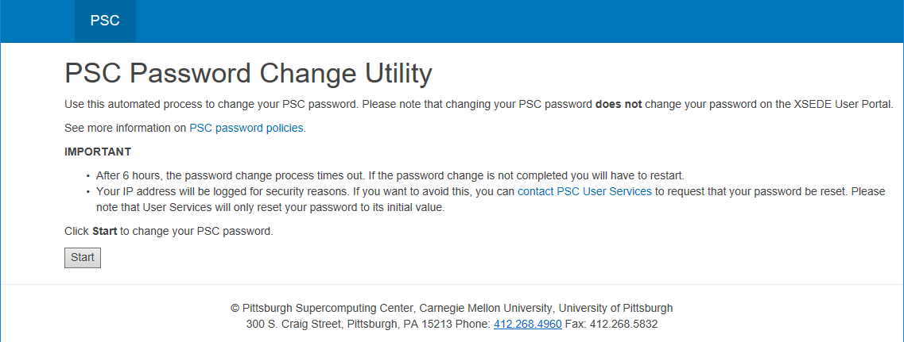
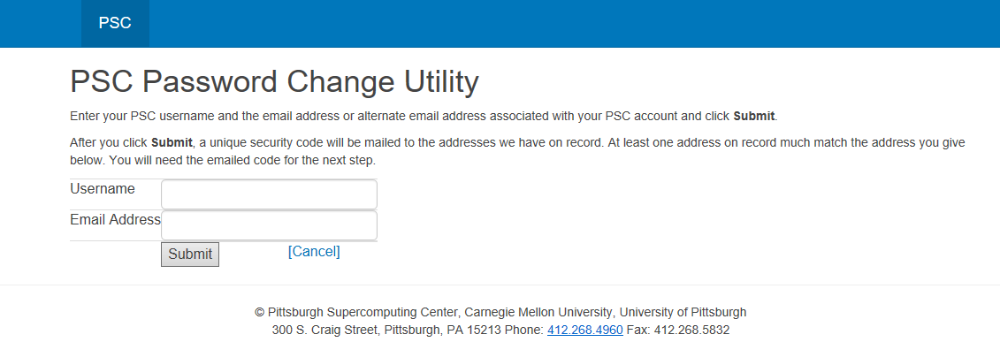
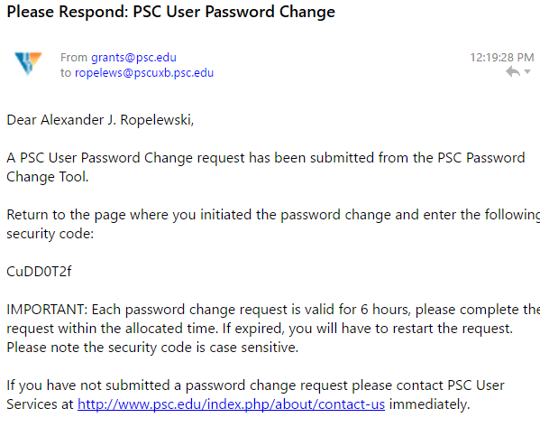
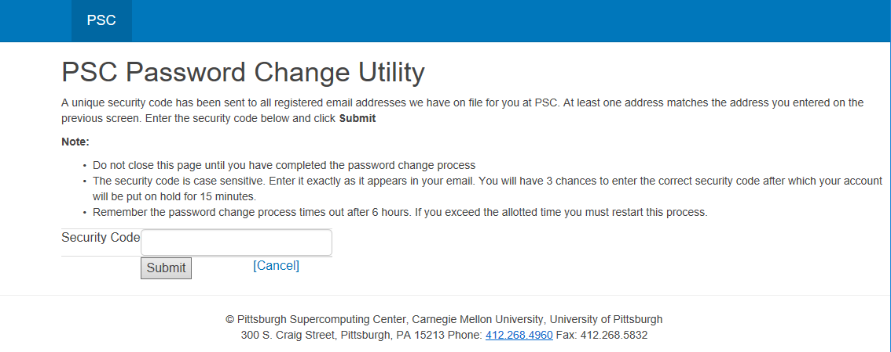
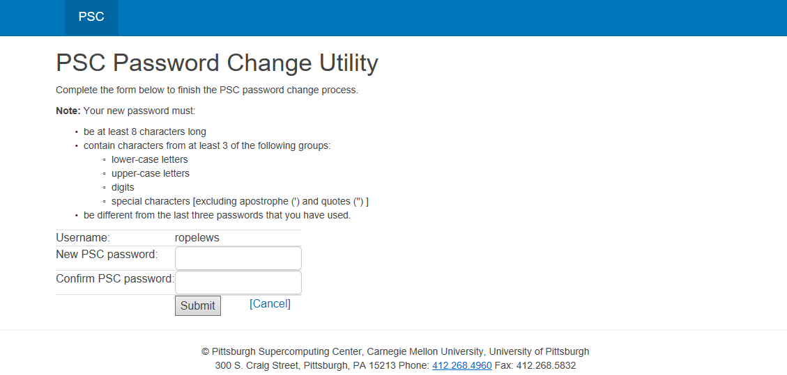

To keep accounts secure, PSC has developed a secure password policy. This policy includes a minimum password length and a password character composition requirement. To review these requirements visit: https://www.psc.edu/user-resources/password-policies
To begin the password reset process, visit apr.psc.edu and click on the gray Start button on the bottom of the screen.

To set (or re-set) your password, you will need to enter your PSC username and the email address that is on file at the center. The username is usually (but not always) the same as your XSEDE portal ID. The email address on file is usually (but not always) the email address associated with your XSEDE Portal Account.

You will receive an email message that contains a unique security code similar to that shown in the following figure:

Enter this code on the webpage and click on the gray Submit button on the bottom of the screen.

Enter a new password (twice) that complies with PSC's password policy
